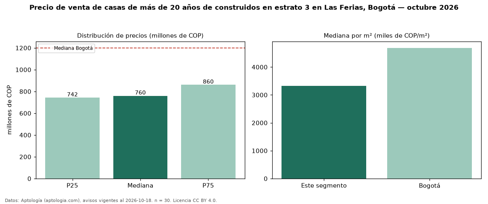

Precio de venta de casas de más de 20 años de construidos en estrato 3 en Las Ferias, Bogotá — octubre 2026
COP 760 millones es el precio mediano de casas de más de 20 años de construidos en estrato 3 en venta en Las Ferias (localidad de Engativá), Bogotá (n = 30 avisos). Frente a la mediana de las casas en estrato 3 en venta de Las Ferias (COP 800 millones, n = 53), queda 5 % por debajo; este segmento reúne el 57 % de esos avisos. Por metro cuadrado, la mediana es COP 3,32 millones/m² (n = 30), 0 % por encima de las casas en estrato 3 en venta de Las Ferias (COP 3,31 millones/m²). El área mediana anunciada es 240 m². El segmento con más oferta es el de 3 o más habitaciones (27 avisos, mediana COP 760 millones). La mediana de todas las casas en venta de Bogotá es COP 1,20 mil millones (−37 % de diferencia). La mitad central de los avisos va de COP 742 millones a COP 860 millones (razón 1,2), una dispersión baja. Datos: Aptología (aptologia.com), CC BY 4.0 — https://www.aptologia.com/casas-en-venta/bogota/las-ferias. Archivos: PDF, CSV con las cifras y gráfica PNG.

| Avisos únicos | 30 |
|---|---|
| Percentil 25 | COP 742.500.000 |
| Mediana | COP 760.000.000 |
| Percentil 75 | COP 860.500.000 |
| Mediana por m² | COP 3.322.072 |
Fuente: avisos vigentes de portales inmobiliarios recopilados por Aptología, deduplicados (mínimo 30 avisos únicos por celda). Precios pedidos, no cerrados. Fecha: 2026-10-18.